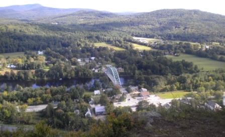

Maps and Trails
Try out our interactive webmap below by (zoom and pan, click on any trail for a description), or click here to try out the trailmap with altitude profiler!
You can purchase a paper trail map at Chapman's for $2 or you can download the trail map (pdf) or click on individual trail maps below for enlargements.
Trails are designated as either hiking trails, which are usually in good to excellent condition, depending on degree of vehicular use, or forest roads or trails, which are rough and often wet. Vehicles degrade trails and should avoid those designated for hiking, and all trails when wet. Trails are maintained by voluneers and user groups. Please leave the paths you travel better for your passing and carry out trash. Open fires are prohibited.
Hiking Trails
- Glen Falls
This short walk up Glen Falls Brook to an 80-foot cascade and waterfall has been a popular hike in Fairlee for over 100 years. Park at the boat ramp on the west side of Lake Morey, cross Lake Morey Road and turn to your left. Walk a few yards south and look for a path on the right leading into the woods. From April to October, follow the clues for the Valley Quest as you walk: https://vitalcommunities.org/valleyquest/quest/fairlee-glen-falls/. - Palisades Trail: [MAP]

Short (1.1 mile with an elevation gain of about 400 feet) hike up to spectacular views from the Palisades! Park at the Fairlee Fire Station at Lake Morey Road, and walk towards the exit ramp (exit from I91 south) and look for the trailhead at the edge of the woods. Beware of poison ivy at the start of the trail. Look for the yellow blazes. The trail levels off at the power lines. Note: The upper trail is closed from March 15 to August 1st when peregrine falcons nest on the cliff face. - Cross-Rivendell Trail (CRT): [MAP] A blue-blazed trail that runs over Bald Top Mountain as part of its 36-mile extent from Mt Cube in Orford, NH to Flagpole Hill in Vershire, VT. The trail can be accessed from the gravel pit on Lake Morey Road, the parking area at the top of Bald Top Road, or the CRT Parking on Blood Brook Road. ATVs share some sections. Great views of the White Mountains from the top of Bald Top Mountain. For more information on the Cross-Rivendell Trail, please see https://rivendelltrail.squarespace.com.
- Echo Mountain Trail
The north section is level and pleasant; the south is steep. Best Lake Morey views are from Eagles Bluff. Best access is from east Cross Rivendell Trail between Bald Top Rd/Trail and Howdy's Trail. There is also an entrance from Brushwood Road which passes through Aloha Foundation land. Solve the puzzle on the Valley Quest as you hike this scenic trail (May - Oct)! https://vitalcommunities.org/valleyquest/quest/eagles-bluff-quest/ - Old Echo Mountain Rd:
Former woods road now steep but sweet hiking trail around the west side of Echo Mountain to Howdy’s Trail. Access from Lake Morey Cross Rivendell (CRT) trailhead. Where Echo Mt. Trail and CRT diverge, continue straight. The intersection from Howdy’s is not signposted. Look for yellow blazing in woods near Howdy’s summit. - Sawyer Mountain Trail: [MAP]
This two-mile hike from Lake Morey Rd. leads to sweeping views up and down the Connecticut River and across to New Hampshire. The elevation gain is 482 feet. Access is from Avery Rd. on the northeast corner of Lake Morey. Follow yellow blazes at the top of driveway, pass under I91 to the high-tension-line clearing. Walk up the midline of the clearing north to the cliff face (beware hogweed). At the foot of the cliff, the trail turns right into the woods and circles the east base of the mountain to a large glacial erratic boulder. At the boulder, turn left straight up the rocky hillside and along a wooded ridge north to the cleared summit. Note: this trail passes through private property. New owners may restrict access. Please obey signs. - Ridge Trail
The nicest of the trails connecting CRT with Knox Trail/Road. It runs along a ridgeline with little vehicular traffic from CRT / Bald Top to the crest of Knox Trail, where there is a pleasant, park-like private woodland and high vernal pool on the west side. From there, Knox descends steeply west, gradually east.
Forest Trails
- Ackerman Road / Trail:
This is a Forest Road between Cross Mountain Rd., (CRT crossing), and Ackerman gate, where it becomes a private forest trail through Ackerman’s camp and up the hillside (badly eroded and wet). It then turns north into town forest land (formerly dry and pleasant) to Bald Top summit. From Bald Top, its descending track is obvious and signposted. Note: This area is being actively logged in 2015 and should be avoided. - Beaver Trail
Old trail to Bald Top along hillside from southern extent of the Wetlands. Crosses Glen Falls Brook below easternmost beaver pond. Remnant stone walls to west of trail suggest former pasturage. Steep sections are short and newly eroded (2014). - Coyote Way:
Makes a loop from Cross Mt. Rd. N and Ackerman Rd. to Cross Mt. Rd. S., intersecting CRT near crest. Named for numerous coyote tracks and scat on snow in 2011. - Fern Trail:
Very steep. Stream crossing at bottom. Named for the fern-covered landing at its terminus on Knox Rd. where Jim O’Donnell used to see moose.
Forest Roads
- Brushwood Road:
This was once a main carriage road between W. Fairlee, Bradford, and Fairlee. Vestiges of the old Brushwood settlement, mill, and schoolhouse can be found near Millpond Rd. intersection. Stone walls and wildflowers here indicate more fertile soils than east of Bald Top. The road surface is best east of Howdy’s Trail, very rough west of Wetlands Trail. Bisects the “Great Fairlee Wetland.” North wetland is a special conservation area; South wetland has many beaver ponds and heron rookery. Please visit respectfully and leave no trace. - Cross Mountain Roads North & South:
The south section of this old, backward L-shaped forest road begins eroded and wet over Big Pine Brook. There are traces of small stone enclosures and possibly a cabin here. The north section rises gradually from Bald Top Rd. in the east to its crest, where it becomes very wet from seeps and streams off May Hill and badly eroded by vehicles as it crosses private land to end at Brushwood Rd.
- Howdy's Trail:
This trail runs between the parking area off Bald Top Rd north to Brushwood Rd, crossing a saddle between Bald Top and Brushwood roads, Echo Mt. and May Hill. If you are walking from the Bald Top Rd parking, you will reach a clearing and see a forest road that goes up to the left but is blocked off with orange netting. Take that branch (under the netting); from there, the trail is easy to follow. Several unmapped skid roads lead NW to Cross Mt. Rd. and May Hill. Across from one of these, near the crest, you can bushwhack 50’ to Old Echo Mt. Rd. Howdy’s north section goes through private land and across the yard of a hunting cabin (formerly “Howdy’s”) before ending at Brushwood Rd. Stone walls and a lovely hill pasture remain from the time this area was farmed. - Knox Road:
East and west sections are public tracks through private land. The eastern section is an active forest road to South Bald Top Trail, becomes hiking and light ATV track to Ridge Trail, then descends steeply to W. Bald Top Trail, CRT, and Blood Brook Rd. in West Fairlee.
 |